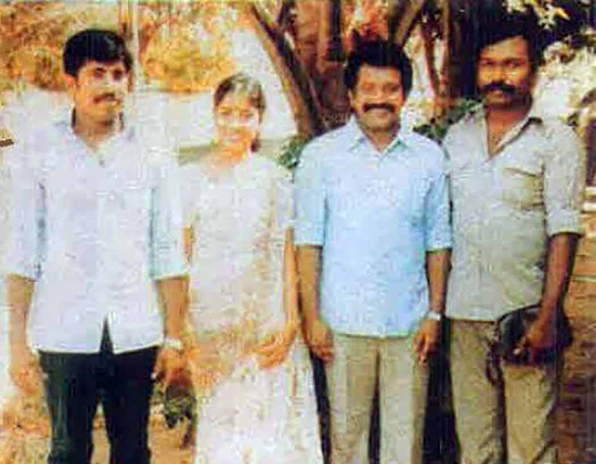
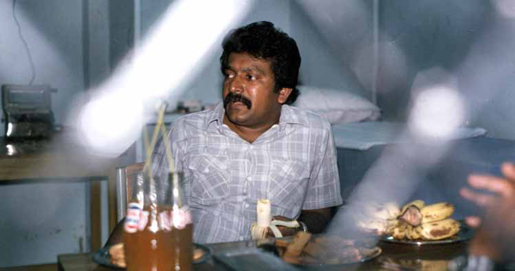
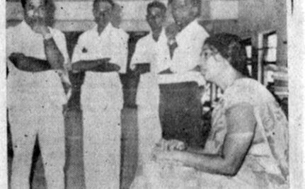
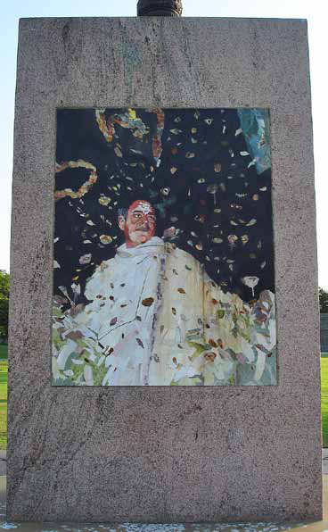

Anton Master Speaks:
Anton Master Speaks:
Jaffna Monitor hellojaffnamonitor@gmail.com 25 Dialog Anton Master Speaks: Former Military Office Chief of LTTE Shares His Untold Story with 'Jaffna Monitor' BY: Kaniyan Pungundran fzpad; G+q;Fd;wd; The most satisfying moment in my militant career In the wake of the burning of the library and the subsequent destruction of downtown Jaffna in 1981, tensions escalated rapidly. People reported seeing several buses loaded with Buddhist monks arriving at the Naga Vihara on Stanley Road in Jaffna. Rumours spread quickly that the monks were also involved in the burning of the library. On the same day, I accidentally visited a secret LTTE meeting house; my visit was unplanned. In the house, prominent members, including Rasupillai, Seelan, and Mahathaya, were preparing for a retaliatory attack on the Buddhist monks at Naga Vihara Temple. They planned to kill as many Buddhist monks as they could. They mistakenly believed that the monks had participated in the burning of the library. I realized the gravity and foolishness of the plan and became convinced that, had this attack been carried out, it would have irreparably harmed the legitimacy of the Tamil liberation movement. Feeling nervous and tense, I knew I couldn't stop the planned attack alone. However, Part- 6 KT Sivakumar, also known as Anton Master, is a prominent early member of the Liberation Tigers of Tamil Eelam (LTTE) and a close associate of leader Prabhakaran. He significantly contributed to the LTTE as a member of its Central Committee and as the founder and head of the Military Office (MO), enhancing the group's military effectiveness. Known for his reticence in media interactions, Sivakumar prefers 'dialogues' over interviews. The following is a part of a series of dialogues I had with him, providing rare insights, which will be featured in the forthcoming issues.

Jaffna Monitor hellojaffnamonitor@gmail.com 26 From left: Gopalaswamy Mahendraraja alias Mahathaya, Mathivathani Erambu—wife of Prabhakaran, Velupillai Prabhakaran, and Raghu alias Varatharasan in the mid-1980s


Jaffna Monitor hellojaffnamonitor@gmail.com 27 Prabhakaran could. I urged them not to take any action until I returned from meeting with Prabhakaran. I rushed to see Prabhakaran, who was lying ill in one of my safe rooms. I explained the consequences of such actions to him, emphasizing that an attack would tarnish the reputation of our movement and irreversibly brand us as terrorists beyond redemption. I stressed that if this reckless attack happened, it would immediately end our struggle for freedom. Prabhakaran agreed with my arguments, and I obtained a written order to halt the attack. With this letter in hand, I returned to them and stopped the planned attack. I believe this decision was crucial in preventing the LTTE from being labelled a terrorist organization at The charred remains of the Jaffna Public Library, once a repository of 97,000 books and rare manuscripts. In a devastating act of cultural vandalism, the library was burned down by Sinhala mobs, allegedly with the tacit approval of the then ruling UNP government and its ministers. Mrs. Ruba Nadaraja, the chief librarian of the Jaffna Public Library, sits devastated amidst the ruins the morning after the catastrophic fire. Surrounding her are library assistants, all mourning the loss of a cultural and educational cornerstone.

Jaffna Monitor hellojaffnamonitor@gmail.com 28 that early stage internationally. I prefer not to dwell on my militant days, as they bring me immense agony. However, reflecting on this incident, I realize there's a hint of satisfaction in knowing I prevented a massacre. It's comforting to realize that my actions helped avert a great calamity that could have befallen the Sri Lankan Tamil community. What is your opinion about Karuna Amman, who was the Eastern Commander of the Liberation Tigers of Tamil Eelam (LTTE)? I saw Karuna only as Prabhakaran's bodyguard. If you are selected in Prabhakaran's bodyguard unit, chances are high that you will be promoted to the ranks of the LTTE. Looking back at the LTTE, it is clear that Prabhakaran prioritized loyalty over talent and merit. This is an everyday reality for anyone leading an organization in an authoritarian way. They have to protect their backs, and Prabhakaran is no exception. Whenever I met Karuna in the 1980s, he would address me as 'Anton Anna,' If I am correct, Karuna was a third-batch trainee in Salem camp. At that time, I did not perceive him as particularly talented. As for his revolt against LTTE leadership, his motives behind it, and the politics and rivalry between him and other LTTE leaders, I have no knowledge of what happened. Since I left/ fired the LTTE, I have never looked back. I only see events here and there on social media or whenever people approach me. What is your view on Rajiv Gandhi's murder? I was not in the Liberation Tigers of Tamil Eelam when Rajiv Gandhi was assassinated. I left a few years ago, in 1988. In my opinion, the killing was a big mistake and shameful. Internationally, this massacre and other alleged terrorist activities by the LTTE became the primary reasons for the LTTE to be considered a terrorist organization. The killing of Tamil United Liberation Front (TULF) leader Amirthalingam was also a significant error and unforgivable. An organization like the LTTE, which was an ethnic liberation movement, should never have indulged in such crimes. I believe the assassination of Rajiv Gandhi was an act of revenge orchestrated by Prabhakaran. The stone mosaic at the site of Rajiv Gandhi's assassination in Sriperumbudur.

Jaffna Monitor hellojaffnamonitor@gmail.com 29 Prabhakaran was foolish to think that after assassinating a former Prime Minister of a nation like India, other countries would continue to support him. Such massacres, along with other senseless killings and misconduct by the LTTE, contributed to the transformation of the LTTE from a movement of freedom fighters to a widely condemned terrorist group. By committing these murders, Prabhakaran not only diminished his status as a freedom fighter but also portrayed himself as a terrorist to the world. Similarly, the LTTE's image shifted from that of freedom fighters to a dreaded terrorist organization. Ultimately, it was the innocent LTTE fighters who paid the price for Prabhakaran's folly. Receiving arms from Premadasa's government The LTTE's decision to receive arms from the then President of Sri Lanka, Premadasa, to fight against India – which had come to the aid of the Sri Lankan Tamil people – was profoundly misguided and unforgivable. It's entirely indefensible for the Tigers, having engaged with the Sri Lankan government for their own survival and self-interest, then to accuse other liberation movements of being quislings for similar collaborations. If one were to adhere to this logic of labelling, then the LTTE and Prabhakaran should be deemed the foremost traitors for colluding with Premadasa's government. However, I don't subscribe to this simplistic labelling. The inconsistency in the Tigers' stance is stark: they received substantial funds and arms from Premadasa to wage war against the Indian government, yet they vehemently criticized and killed leaders and members of other movements for forming alliances with the Sri Lankan government, denouncing them as traitors. This approach is fundamentally flawed and epitomizes a double standard. What was your state of mind when Prabhakaran died in 2009? I had been anticipating this downfall since 1988. It became clear to me back then that Prabhakaran, through his foolishness, would ultimately destroy himself and the LTTE. This was apparent to me when Prabhakaran rejected the interim government proposed by the Indian government and chose to wage war against it in 1988. However, I did not know when or where their end would come. Therefore, when Prabhakaran died, and the LTTE was completely destroyed in 2009, I did not experience any particular emotion. However, the fact that Prabhakaran, through his recklessness, caused the deaths of thousands of innocent lives, including his own, is something that deeply saddens me. He did not have the foresight to realize that there is no such straight-line road to Tamil Eelam, federalism, whatever. This would not have happened if he had known that there are many steps and paths to overcome during the process of achieving a freedom struggle. Now, I see many moderate Tamil parties/ leaders making the same mistakes. Their empty sentimental slogans and cinematic heroic populist speeches do not achieve anything. They do not want to use the 13th Amendment as a stepping stone. However, the same people fight tooth and nail with others for less powerful provincial councils who are still rejecting the 13th Amendment. This is a funny joke.